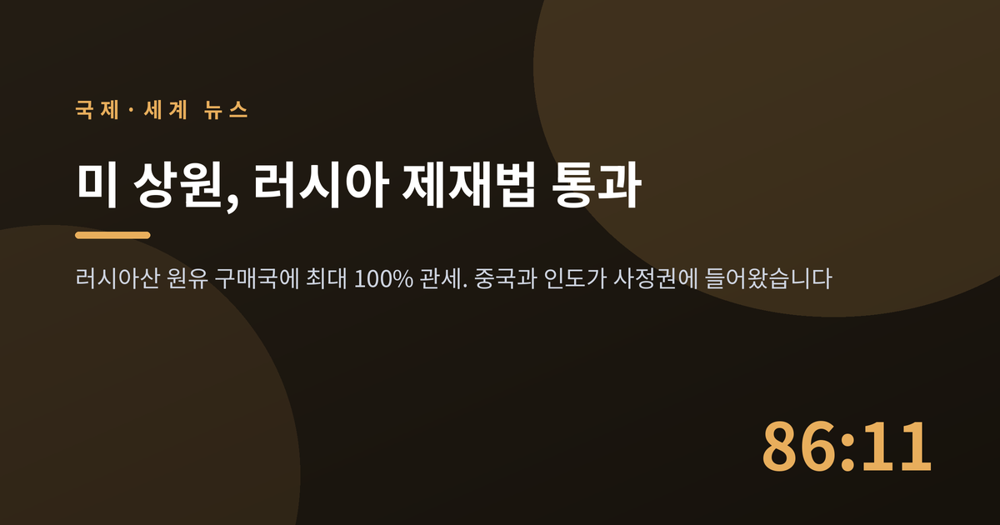
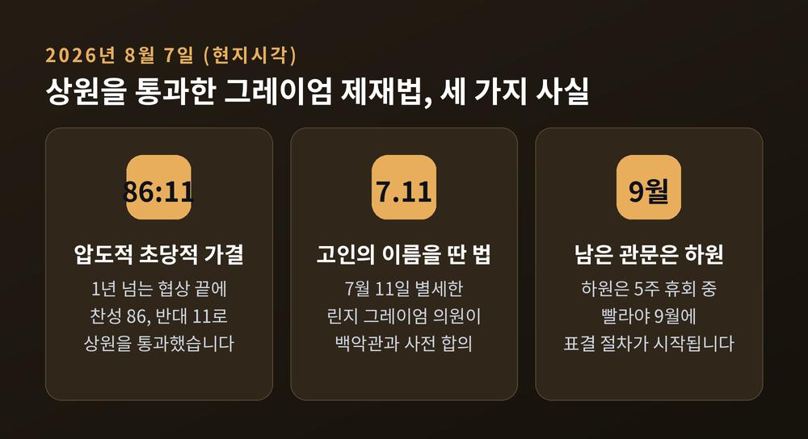
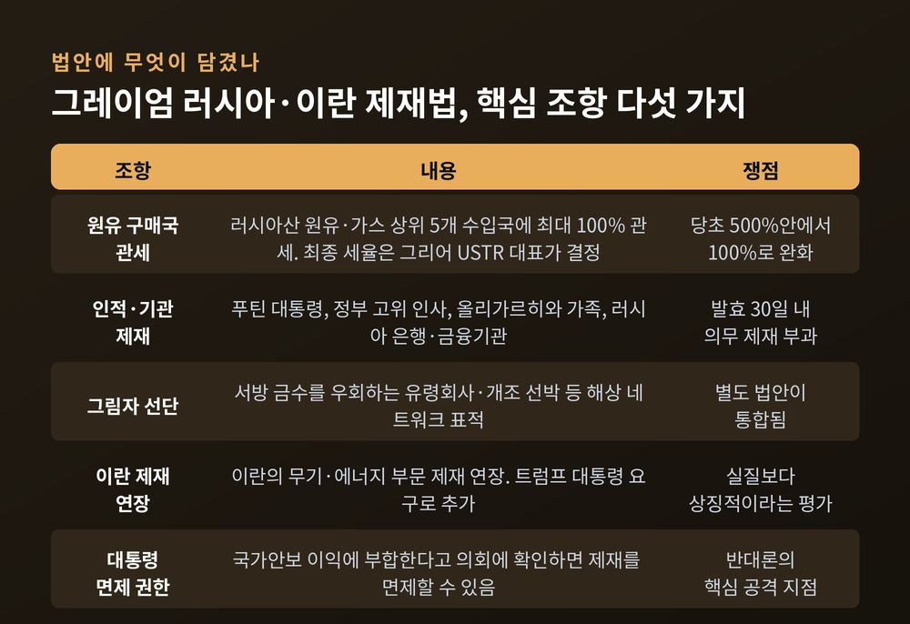
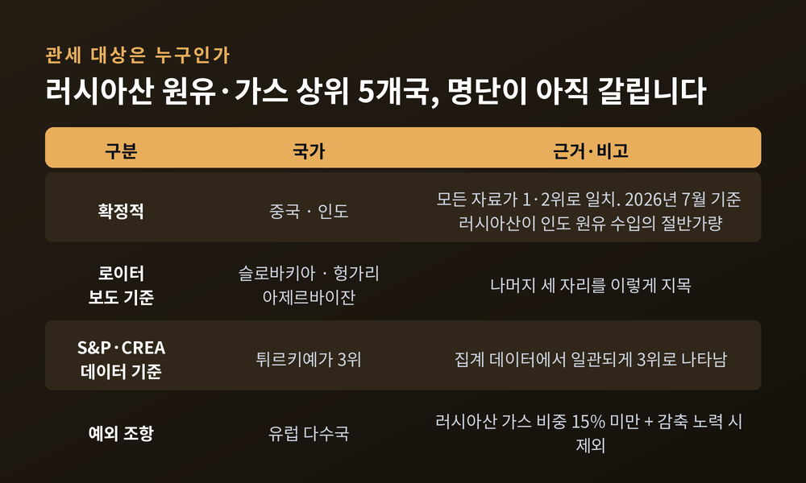
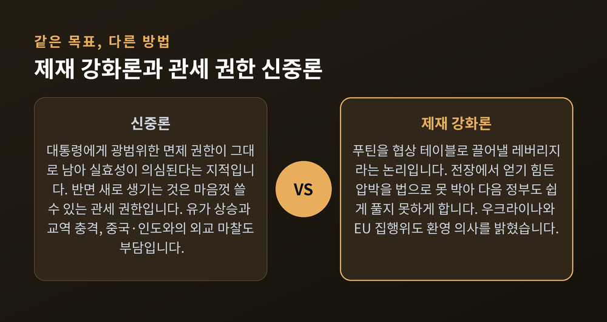
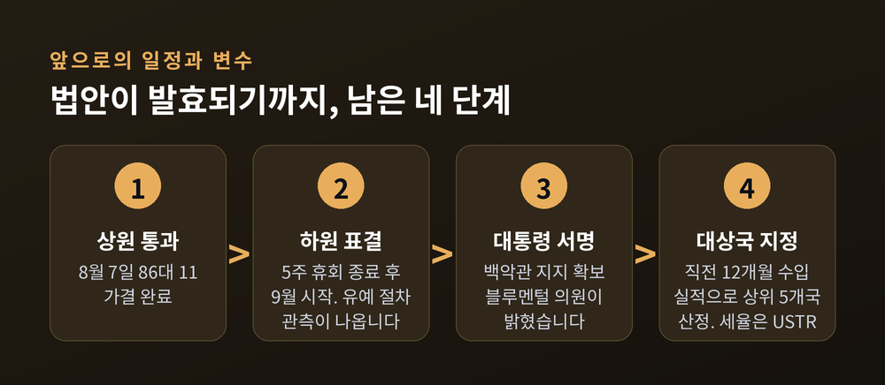

미국 상원 러시아 제재법 통과, 중국·인도 100% 관세가 던진 파장

이번 글에서는 지난 8월 7일 미국 상원을 통과한 러시아 제재 법안을 정리해 보겠습니다. 표결 결과 자체보다, 그 안에 담긴 '러시아산 원유 구매국 관세' 조항이 중국·인도와의 관계에 무엇을 던졌는지가 핵심입니다. 찬성 측 논리와 신중론을 함께 놓고 보겠습니다.
8월 7일, 상원에서 벌어진 일
2026년 8월 7일 금요일, 미국 상원이 대러시아 제재 법안을 가결했습니다.
찬성 86표, 반대 11표. 1년 넘게 끌어온 협상의 결말치고는 압도적인 숫자입니다.
법안의 이름은 '2026년 린지 O. 그레이엄 러시아·이란 제재법'입니다. 지난 7월 11일 세상을 떠난 린지 그레이엄 상원의원(공화·사우스캐롤라이나)의 이름을 붙였습니다.
그레이엄은 사망 직전 우크라이나 키이우를 다녀왔습니다. 돌아온 뒤 백악관과 수정안 처리에 합의했다고 발표했고, 그 합의가 상원 통과의 길을 열었습니다.
법안을 함께 주도한 민주당 리처드 블루멘털 의원(코네티컷)은 표결 뒤 이날을 "기념비적인 날"이라고 표현했습니다. 고인의 여동생으로 오빠의 의석을 승계한 달린 그레이엄 의원은 "푸틴의 아픈 곳을 때린다"고 평했습니다.
예전에는 이 법안이 백악관의 반대나 다른 현안에 밀려 번번이 좌초했습니다. 지금은 상원 문턱을 넘어 하원 앞에 서 있습니다.

법안에는 무엇이 담겼나
가장 주목받는 조항은 관세입니다.
러시아산 원유와 천연가스를 가장 많이 수입하는 상위 5개국에 최대 100% 관세를 부과할 수 있는 권한을 행정부에 줍니다. 대상국은 법 발효 직전 12개월간의 수입 실적으로 정합니다.
원래 그레이엄이 밀던 안은 500% 관세였습니다. 최종본에서 100%로 낮아졌습니다. 최종 관세율은 제이미슨 그리어 미국무역대표부(USTR) 대표가 결정합니다.
예외도 있습니다. 천연가스의 15% 미만을 러시아에서 수입하면서 수입을 줄이기 위한 '의미 있는' 조치를 취하는 나라는 대상에서 빠집니다. 사실상 유럽을 배려한 장치로 읽힙니다.
관세만 있는 것은 아닙니다.
블라디미르 푸틴 대통령을 비롯한 러시아 정부 고위 인사, 올리가르히라 불리는 신흥 재벌과 그 가족, 러시아 은행과 금융기관이 제재 명단에 오릅니다. 법 발효 뒤 30일 안에 러시아 정부 계열 특정 금융기관을 의무적으로 제재하도록 대통령에게 요구하는 조항도 있습니다.
서방의 금수 조치를 우회하는 데 쓰이는 '그림자 선단' 제재법도 이 법안에 통합됐습니다. 유령회사와 개조된 선박으로 이뤄진 해상 네트워크가 표적입니다.
트럼프 대통령의 요구로 이란의 무기·에너지 부문 제재 연장도 함께 들어갔습니다.
마지막으로 면제 조항이 있습니다. 대통령이 미국의 국가안보 이익에 부합한다고 의회에 확인하면 제재를 면제할 수 있습니다. 이 조항이 이후 논쟁의 진앙이 됩니다.

왜 하필 지금인가
타이밍에는 이유가 있습니다.
러시아는 이미 원유 수입 감소와 재정적자 확대로 눌려 있는 상태입니다. 2026년 상반기에는 금 보유고가 25년 만에 가장 큰 폭으로 줄었습니다.
2026년 5월부터 우크라이나의 러시아 에너지 시설 타격이 거세졌습니다. 정유공장과 처리시설이 주된 표적입니다.
8월 들어서는 공격이 더 집중됐습니다. 8월 13일에는 우크라이나 국경에서 약 1,300km 떨어진 가즈프롬 네프테힘 살라바트 정유 콤플렉스가 피격됐습니다. 연간 최대 7,400만 배럴을 처리하는 러시아 최대급 시설이고, 사흘 사이 네 번째로 타격당한 정유시설이었습니다.
타타르스탄 니즈네캄스크의 석유 허브 공격에서는 13명이 숨지고 78명이 다쳤습니다. 4년 전쟁 중 가장 치명적인 공격 가운데 하나로 기록됐습니다.
러시아는 연말까지 휘발유 수출을 전면 금지했습니다. 국내 수급이 그만큼 빠듯하다는 뜻입니다.
수출길도 막혀 있습니다. 러시아는 선적을 서둘렀지만 수요가 따라주지 않아, 7월 초 기준 약 1억 3,700만 배럴이 바다 위에 떠 있는 상태였습니다. 이집트와 싱가포르 인근에 몰려 있었습니다.
의회가 지금 무게를 실은 이유가 여기 있습니다. 상대가 흔들릴 때 압박을 법으로 못 박아두겠다는 판단입니다.
중국과 인도는 어떻게 보고 있나
관세 대상 상위 5개국에서 중국과 인도가 1·2위라는 점은 모든 자료가 일치합니다. 나머지 세 자리는 아직 논쟁 중입니다. 로이터는 슬로바키아·헝가리·아제르바이잔을 지목했지만, S&P 글로벌과 에너지·청정대기 연구센터(CREA) 데이터는 튀르키예를 3위로 집계합니다. 어떤 데이터를 쓰느냐에 따라 명단이 달라집니다.
인도의 입장은 분명합니다.
인도 외교부는 법안을 "면밀히 주시하고 있다"고 밝히면서, 자국의 에너지 정책이 "우리의 국가적 우선순위, 그리고 14억 국민의 에너지 수요를 다변화된 공급원을 통해 확보하는 데 기초한다"고 설명했습니다. 그 다변화 공급원에 미국도 포함된다는 점을 함께 강조했습니다.
인도의 사정은 단순하지 않습니다. 2026년 2월 트럼프 대통령과 모디 총리는 인도가 러시아산 원유 구매를 줄이는 대신 미국의 대인도 관세를 50%에서 18%로 낮추기로 합의했습니다. 그런데 몇 주 뒤 이란 사태와 호르무즈 해협 봉쇄로 걸프산 공급이 막혔습니다. 인도는 러시아산 구매를 다시 늘렸고, 2026년 7월 기준 러시아산이 인도 원유 수입의 절반가량을 차지하게 됐습니다.
중국은 결이 다릅니다.
2025년 4월 미국의 관세 조치에 중국은 중희토류 7종 수출통제로 응수했습니다. 미국과 유럽의 방산·첨단기술 공급망이 흔들렸습니다. 같은 해 10월에는 희토류 5종과 관련 기술·장비로 규제를 넓혔고, 워싱턴은 중국산 수입품에 100% 관세로 맞섰습니다. 10월 말 1년 시한의 무역 휴전이 성립했지만 근본 갈등은 그대로입니다.
애틀랜틱카운슬은 이 대목을 이렇게 짚습니다. 관세가 중국의 행동을 바꿀 것이라는 전제 자체가 최근 경험과 어긋난다는 것입니다. 과거의 관세 인상은 보복과 협상으로 이어졌을 뿐, 베이징의 선택을 명확히 돌려세우지는 못했습니다.

찬성 측 논리와 신중론
양쪽 모두 나름의 근거를 갖고 있습니다.
찬성 측은 압박의 효과를 봅니다. 상원 외교위 간사 짐 리시 의원(공화)은 이 법이 "마침내 러시아를 협상 테이블로 끌어낼 수 있다"며, "푸틴의 전쟁 기계를 돌리는 현금 흐름을 끊을 것"이라고 말했습니다. 진 샤힌 의원(민주)은 "푸틴이 알아듣는 유일한 언어, 즉 압박"이라는 메시지라고 했습니다.
볼로디미르 젤렌스키 우크라이나 대통령은 "실질적이고 강력한 미국의 압박과 대러 제재가 가장 큰 도움이 된다"며 환영했습니다. 우르줄라 폰데어라이엔 유럽연합 집행위원장도 지지를 표했습니다.
신중론은 다른 곳을 봅니다.
하원 외교위 간사 그레고리 믹스 의원(민주·뉴욕)과 돈 바이어 의원(민주·버지니아)은 상원 통과 직후 "현재 문안은 수용 불가"라는 공동 성명을 냈습니다. 요지는 두 가지입니다. 제재 조항에는 대통령에게 가장 광범위한 면제 권한이 그대로 남아 있고, 정작 새로 생기는 것은 대통령이 마음껏 쓸 수 있는 관세 권한이라는 것입니다. 두 의원은 대통령이 이미 현행법으로 러시아 지도부를 제재할 권한을 갖고 있다는 점도 지적했습니다.
공화당 안에서도 이견이 있었습니다. 랜드 폴 의원(켄터키)은 관세 권한을 삭제하는 수정안 표결을 관철시켰지만 부결됐습니다. 메이지 히로노 의원(민주)은 예측 불가능한 관세 권한이 시장 혼란을 키운다며 반대했습니다.
민주당 라파엘 워녹 의원(조지아)의 사례는 이 긴장을 잘 보여줍니다. 그는 그리어 USTR 대표로부터 관세 권한이 과도하게 확대되는 '구멍'을 막겠다는 서면 약속을 받고서야 반대를 거뒀습니다. 워녹은 이를 "작지만 의미 있는 승리"라고 표현했습니다.
애틀랜틱카운슬이 지목한 위험도 새겨둘 만합니다. 광범위한 관세를 부과한 뒤 대규모 면제나 번복이 뒤따르면, 제재의 신뢰성 자체가 무너진다는 것입니다.

그림자 선단이 왜 문제인가
법안이 '그림자 선단'을 표적으로 삼은 이유는 최근 사고 하나로도 충분히 설명됩니다.
카롤린 베젠기 호는 길이 247m의 대형 유조선입니다. 러시아산 원유 약 80만 배럴을 싣고 5월 흑해 노보로시스크 항을 떠나 인도로 향했습니다. 이 배는 러시아산 원유를 운송한다는 이유로 영국 정부와 유럽연합의 제재 명단에 올라 있습니다.
6월 8일 오만 남부 해역을 지나던 중 폭발물 공격이 의심된다는 무선 신고가 있었습니다. 그리고 6월 30일, 오만의 해양보호구역에 속한 섬 인근에서 좌초했습니다.
한 달 넘게 방치되는 동안 기름이 새 나갔습니다.
유출 규모는 발표 주체마다 다릅니다. 오만 정부는 8월 11일 기준 약 400km²라고 밝혔고, 그린피스는 약 600km²로 추정했습니다. 위성 영상을 분석한 기름유출 전문가 존 에이모스는 2,000km²를 넘는다고 봤습니다. 수치 차이는 크지만, 방향은 하나입니다. 8월 13일 오만 당국은 기름이 해안선에 도달했다고 발표했습니다.
제재를 피하려고 만든 그림자 항로가 결국 제재의 명분을 키운 셈입니다.
한국에는 어떤 의미인가
한국이 이번 관세 대상국으로 거론된 적은 없습니다. 이번 리서치에서 한국에 미치는 직접적 영향에 관한 구체적 자료도 확인되지 않았습니다. 이 점은 분명히 해두겠습니다.
다만 지켜볼 만한 통로는 있습니다.
첫째, 유가와 해상운임입니다. 중국·인도에 100% 관세가 실제로 발동되면 원유 교역 흐름이 재편되고 변동성이 커집니다. 한국은 원유를 사실상 전량 수입에 의존합니다.
둘째, 원료 조달 경쟁입니다. 호르무즈 해협 봉쇄로 걸프산 공급이 이미 제약된 상태입니다. 여기에 러시아산 흐름까지 좁아지면 아시아 정유·석유화학 업계의 조달 경쟁이 심해집니다.
셋째, 중국의 보복 카드입니다. 베이징이 다시 희토류 수출통제를 꺼내 들면 동아시아 첨단산업 공급망이 함께 흔들립니다. 2026년 8월 현재 일본이 중국의 희토류 통제로 전기차·반도체 장비 조달에 어려움을 겪는다는 보도가 나오고 있습니다.
한국은 이 법안의 표적이 아닙니다. 그러나 표적 옆에 서 있습니다.
앞으로 무엇을 지켜봐야 하나
하원 표결이 첫 관문입니다. 하원은 5주간의 8월 휴회 중이라 빨라야 9월에 절차가 시작됩니다.
마이크 존슨 하원의장은 백악관과 합의가 이뤄졌다는 소식에 "고무됐다"며 "기꺼이 접수해 처리하겠다"고 밝혔습니다. 수정안을 금지하고 3분의 2 찬성을 요구하는 '유예 절차'로 처리될 것이라는 관측도 나옵니다. 문턱이 높은 방식입니다.
블루멘털 의원은 하원의 진통을 인정하면서도 "이 법안이 통과될 법안"이라고 말했습니다. 대통령이 지지한다는 점도 함께 언급했습니다.
이 밖에 지켜볼 지점은 네 가지입니다.
- 상위 5개국 명단 확정 — 어떤 데이터를 채택하느냐에 따라 튀르키예의 포함 여부가 갈립니다.
- 면제 권한의 실제 사용 빈도 — 남발되면 제재의 무게가 사라집니다.
- 중국의 대응 방식 — 희토류 카드가 다시 나올지가 최대 변수입니다.
- 호르무즈 해협 재개 여부 — 중동산 대체 공급이 회복돼야 인도가 러시아산 의존을 줄일 수 있습니다.
여기에 하나를 더 얹자면 미국 중간선거입니다. 러시아 대사관과 미국 민주당 일부가 각기 다른 위치에서 "유가 상승이 미국 유권자의 부담"이라는 같은 논리를 쓰고 있습니다. 유가는 정치의 언어이기도 합니다.

끝으로 한 마디만 더 드리겠습니다.
이번 법안은 제재의 강도보다 권한의 위치를 둘러싼 논쟁에 가깝습니다. 압박을 법에 못 박아 다음 정부도 쉽게 풀지 못하게 하자는 쪽과, 그 과정에서 행정부에 지나치게 넓은 관세 재량을 넘겨준다는 쪽이 맞섰습니다. 어느 쪽도 우크라이나를 돕지 말자고 하지는 않았습니다. 방법을 두고 갈렸을 뿐입니다.
그레이엄 의원이 세상을 떠나기 얼마 전 우크라이나에서 남긴 말이 있습니다. "제 바람은 외교로 이 전쟁을 끝내는 것입니다. 푸틴에 대한 레버리지가 클수록 좋습니다."
레버리지는 만들어졌습니다. 그것이 협상 테이블로 이어질지, 아니면 또 하나의 관세 전선으로 번질지는 아직 알 수 없습니다. 9월의 하원이 그 첫 답을 내놓을 것입니다.